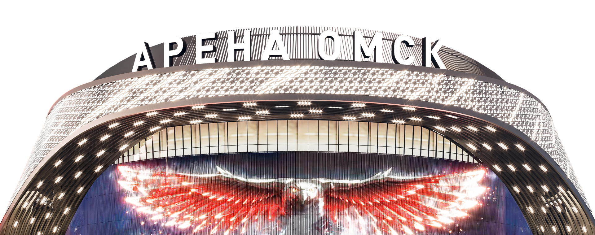

ГРАНДИОЗНОЕ ОТКРЫТИЕ
Это текст-"рыба", часто используемый в печати и вэб-дизайне. Lorem
Ipsum является стандартной "рыбой" для текстов на латинице с
начала XVI века. В то время некий безымянный печатник создал большую

Ipsum является стандартной "рыбой" для текстов на латинице с
начала XVI века. В то время некий безымянный печатник создал большую